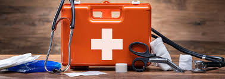
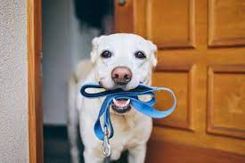
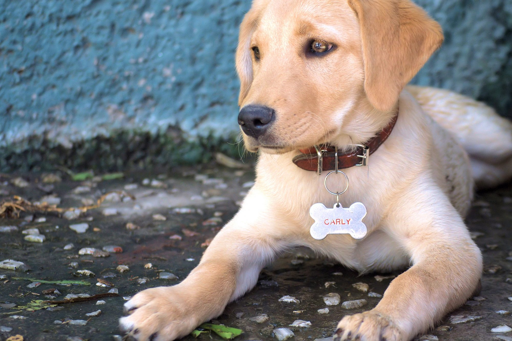
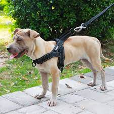
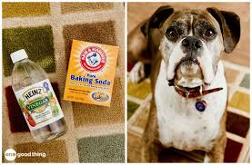

- PET FIRST AID KIT
- Spare leash
- ID TAG
- HARNESS
- STAIN AND ODOR REMOVER

Emergencies can strike at any time, whether you’re at home,
running errands around town, or traveling. When they
do occur, you should always be prepared with a dog first-aid
kit, in addition to your human supplies.

A spare leash is kind of like a spare jacket for us humans;
when you need it, you’re REALLY happy you packed it. To buy
spare Leash click at buy now.

In the world of dog essentials, put this at the top of your list.
Even if your dog is microchipped, if they escape or get lost,
ID tags personalized with their name will help ensure they get
home as quickly as possible. For most dogs, ID tags should
be worn 24-7 on a flat collar (not a martingale-style) in case of
fire, earthquake, or other emergencies.

A harness helps provide more security and comfort for many
dogs, and it’s especially good for those who tend to pull on leash.
For more on the different types of harnesses available, click
on buy now to harnesses and collars.

Enzyme-based cleaners are truly a miracle invention. They help
remove stubborn urine smells from just about anywhere while
removing the underlying pheromones that, when left behind, pups tend
to return to and re-mark.
| Feedback Form |